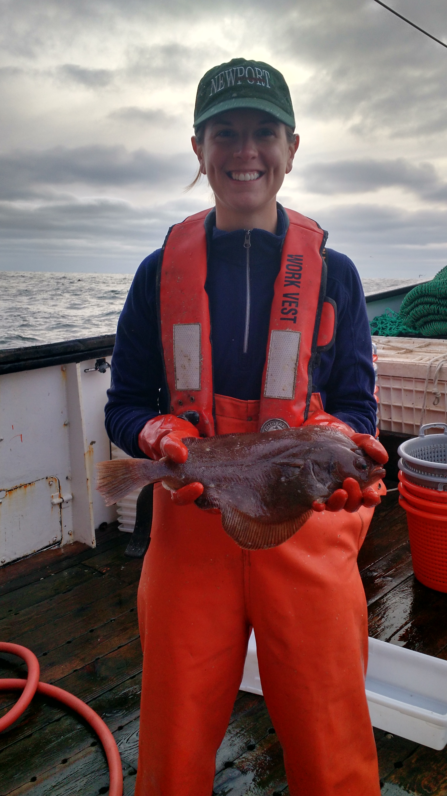

|  | welcomeI'm Christine, a postdoctoral researcher at NOAA Fisheries - Alaska Fisheries Science Center. I'm currently constructing an individual-based model for Alaskan snow crab (Chinoecetes opilio) populations to predict impacts of ocean acidification and climate change on this species. I recently completed my PhD at the University of Washington in the Quantitative Ecology and Resource Management (QERM) program. I worked with Tim Essington in the School of Aquatic and Fishery Sciences to identify how and why somatic growth in marine groundfish varies and how this variation affects population productivity and fisheries management. I'm broadly interested in fisheries population dynamics and stock assessment and how these may be impacted by changing ocean conditions. Throughout my PhD work I was able to explore these questions more through collaborations via the NMFS/Sea Grant Population Dynamics Fellowship program and the NSF IGERT Program on Ocean Change. I'd be happy to talk to you about my research, the QERM program at UW, or life as a quantitative ecologist and/or fisheries scientist in general; email is the best way to contact me. |